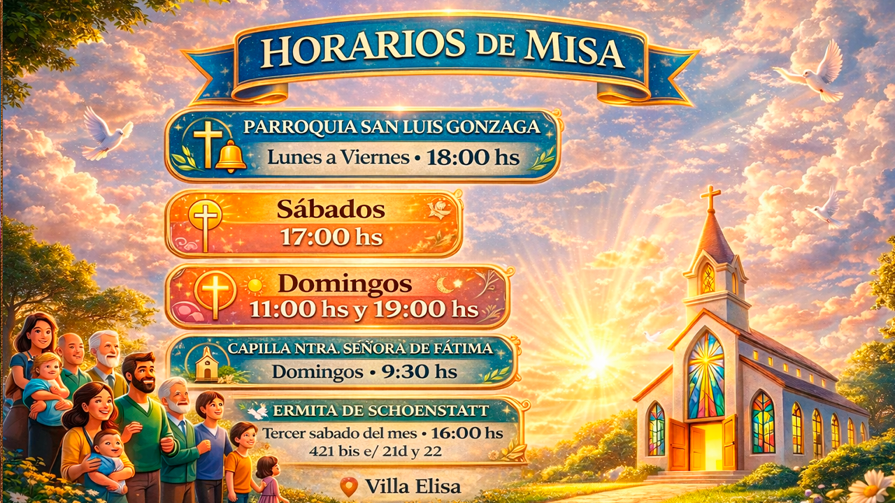

  <!-- Card de Video con Glassmorphism -->
  <div class="video-container" style="max-width: 900px; margin: 40px auto; padding: 20px; background: linear-gradient(135deg, #ff9800 0%, #ffc107 100%); border-radius: 30px; box-shadow: 0 15px 50px rgba(0, 0, 0, 0.3);">
    <div class="video-card" style="
      background: linear-gradient(135deg, rgba(255, 255, 255, 0.25), rgba(255, 255, 255, 0.15));
      backdrop-filter: blur(25px);
      -webkit-backdrop-filter: blur(25px);
      border-radius: 30px;
      padding: 30px;
      box-shadow: 
        0 8px 32px 0 rgba(0, 0, 0, 0.2),
        0 20px 50px rgba(0, 0, 0, 0.15),
        inset 0 1px 2px rgba(255, 255, 255, 0.6);
      border: 2px solid rgba(255, 255, 255, 0.35);
      position: relative;
      overflow: hidden;
      transition: all 0.4s ease;
    " onmouseover="this.style.transform='translateY(-5px)'; this.style.boxShadow='0 12px 40px 0 rgba(0, 0, 0, 0.3), 0 25px 60px rgba(0, 0, 0, 0.2)';" 
       onmouseout="this.style.transform='translateY(0)'; this.style.boxShadow='0 8px 32px 0 rgba(0, 0, 0, 0.2), 0 20px 50px rgba(0, 0, 0, 0.15)';">
      
      <!-- Efecto de brillo animado -->
      <div style="
        position: absolute; 
        top: -50%; 
        left: -50%; 
        width: 200%; 
        height: 200%; 
        background: radial-gradient(circle, rgba(255, 255, 255, 0.2) 0%, transparent 70%); 
        animation: rotate-subtle 25s linear infinite; 
        pointer-events: none; 
        z-index: 0;
      "></div>
      
      <!-- Contenido del video -->
      <div style="position: relative; z-index: 2;">
        <!-- Título decorativo -->
        <div style="text-align: center; margin-bottom: 20px;">
          <i class="material-icons" style="vertical-align: middle; font-size: 2em; color: white; margin-right: 10px; filter: drop-shadow(0 2px 8px rgba(0, 0, 0, 0.3));">play_circle</i>
          <h3 style="
            font-family: 'Georgia', serif;
            font-size: 1.8em;
            color: white;
            margin: 0;
            font-weight: 700;
            letter-spacing: 0.5px;
            display: inline-block;
            text-shadow: 0 2px 10px rgba(0, 0, 0, 0.3);
          ">
            Horarios de Misa
          </h3>
        </div>
        
        <!-- Contenedor del video responsive -->
        <div style="
          position: relative;
          padding-bottom: 56.25%;
          height: 0;
          overflow: hidden;
          border-radius: 20px;
          box-shadow: 
            0 10px 30px rgba(0, 0, 0, 0.3),
            inset 0 0 0 1px rgba(255, 255, 255, 0.2);
        ">
          <iframe 
            style="
              position: absolute;
              top: 0;
              left: 0;
              width: 100%;
              height: 100%;
              border: none;
              border-radius: 20px;
            "
            src="https://www.youtube.com/embed/YQz-kI2EtNw?autoplay=1&mute=0&controls=1&rel=0&modestbranding=1"
            title="Video de YouTube"
            allow="accelerometer; autoplay; clipboard-write; encrypted-media; gyroscope; picture-in-picture"
            allowfullscreen>
          </iframe>
        </div>
      </div>
    </div>
 
   </div>
  <br>

  <!-- otro ejemplo -->
    <!-- Horarios de Misa -->
  <div class="horarios-container" style="max-width: 900px; margin: 40px auto; padding: 20px; background: linear-gradient(135deg, #ff9800 0%, #ffc107 100%); border-radius: 30px; box-shadow: 0 15px 50px rgba(0, 0, 0, 0.3);">
    <div class="horarios-card" style="
      background: linear-gradient(135deg, rgba(255, 255, 255, 0.25), rgba(255, 255, 255, 0.15));
      backdrop-filter: blur(20px);
      -webkit-backdrop-filter: blur(20px);
      border-radius: 25px;
      padding: 35px;
      box-shadow: 0 8px 32px 0 rgba(0, 0, 0, 0.2), 0 15px 40px rgba(0, 0, 0, 0.15), inset 0 1px 1px rgba(255, 255, 255, 0.5);
      border: 1px solid rgba(255, 255, 255, 0.3);
      position: relative;
      overflow: hidden;
    ">
      <div style="position: absolute; top: -50%; left: -50%; width: 200%; height: 200%; background: radial-gradient(circle, rgba(255,255,255,0.1) 0%, transparent 70%); animation: rotate-subtle 30s linear infinite; pointer-events: none; z-index: 0;"></div>
      <div style="position: relative; z-index: 2;">
        <div style="text-align: center; margin-bottom: 25px; display: flex; align-items: center; justify-content: center; gap: 12px;">
          <i class="material-icons" style="font-size: 2.5em; color: white; filter: drop-shadow(0 2px 8px rgba(0, 0, 0, 0.3));">notifications</i>
          <h2 style="font-family: 'Georgia', serif; font-size: 2.2em; color: white; margin: 0; font-weight: 700; letter-spacing: 0.5px; text-shadow: 0 2px 10px rgba(0, 0, 0, 0.3);">Horarios de Misa</h2>
        </div>
        <div class="video-horarios-wrapper" style="position: relative; border-radius: 20px; overflow: hidden; box-shadow: 0 10px 30px rgba(0, 0, 0, 0.3), inset 0 1px 1px rgba(255, 255, 255, 0.3); border: 2px solid rgba(255, 255, 255, 0.2);">
          <div class="video-horarios-container" style="position: relative; padding-bottom: 56.25%; height: 0; overflow: hidden;">
            
            <div class="play-button-horarios" style="position: absolute; top: 50%; left: 50%; transform: translate(-50%, -50%); width: 80px; height: 80px; background: rgba(255, 255, 255, 0.95); border-radius: 50%; display: flex; align-items: center; justify-content: center; cursor: pointer; z-index: 2; transition: all 0.3s ease; box-shadow: 0 8px 20px rgba(0, 0, 0, 0.3);"
              onclick="playHorariosVideo();"
              onmouseover="this.style.transform='translate(-50%, -50%) scale(1.1)';"
              onmouseout="this.style.transform='translate(-50%, -50%) scale(1)';">
              <i class="material-icons" style="color: #ff9800; font-size: 48px; margin-left: 5px;">play_arrow</i>
            </div>
            <iframe id="youtube-iframe-horarios" class="video-horarios-iframe"
              style="position: absolute; top: 0; left: 0; width: 100%; height: 100%; z-index: 0;"
              data-video-id="YQz-kI2EtNw"
              src="https://www.youtube.com/embed/YQz-kI2EtNw?controls=1&rel=0&modestbranding=1&playsinline=1&enablejsapi=1"
              title="Horarios de Misa" frameborder="0"
              allow="accelerometer; autoplay; clipboard-write; encrypted-media; gyroscope; picture-in-picture; web-share"
              allowfullscreen referrerpolicy="strict-origin-when-cross-origin">
            </iframe>
          </div>
        </div>
      </div>
    </div>
  </div>
  <style>
    @media (max-width: 768px) {
      .video-horarios-container { padding-bottom: 100% !important; }
      .video-horarios-iframe { width: 177.78% !important; height: 177.78% !important; left: 50% !important; transform: translateX(-50%); }
      .video-poster-horarios { width: 177.78% !important; height: 177.78% !important; left: 50% !important; transform: translateX(-50%); }
      .horarios-card { padding: 20px !important; }
      .horarios-card h2 { font-size: 1.5em !important; }
    }
    .horarios-container:hover .horarios-card { transform: translateY(-5px); transition: all 0.3s ease; }
  </style>

  <script>
    function playHorariosVideo() {
      const poster = document.getElementById('poster-horarios');
      const playButton = document.querySelector('.play-button-horarios');
      const iframe = document.getElementById('youtube-iframe-horarios');

      if (!iframe) return;

      const videoId = iframe.dataset.videoId || 'YQz-kI2EtNw';
      iframe.src = `https://www.youtube.com/embed/${videoId}?autoplay=1&controls=1&rel=0&modestbranding=1&playsinline=1&enablejsapi=1`;

      if (poster) poster.style.display = 'none';
      if (playButton) playButton.style.display = 'none';
    }
  </script>
